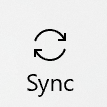

How Do I Log In to my Church Account - Silent Video
How Do I Log In to my Church Account - Silent VideoAnnotations can be synced between devices in Gospel Library. This is done by storing the annotations on the Church server. Each user name has a place on the Church server to store annotations. When properly synced, each device will have the latest updated version of annotations. Sync occurs when the annotations from the device and the Church server are updated. Sync occurs when:
If an annotation from another device is not showing up on your device:
To sync the annotations manually on Gospel Library for Windows you need to access the sync in option in the Church Account section of the Settings pane. To open the Settings pane, press the Settings button () on the navigation bar.
Select Church account from the menu.
Press the sync button.
One way to guarantee that other devices are synced is to close and re-open the app. Closing the app is not just leaving the app for another app. You can find out how to close (or force stop) an app for a specific device by using your search engine with a statement like:
How to close an app on XXXXX, where XXXXX is the name of or operating system of your device
How Do I Log In to my Church Account - Silent Video
The first time you run the app, a screen like the one below will prompt you to sign in. If you signed in at this screen, you are already logged in to your Church Account and your annotations are being automatically synced with ChurchOfJesusChrist.org.
When you mark or annotate gospel content without a connection to the internet, the application will save any changes you have made and sync them with your Church Account as soon as it has a connection again.
If you did not sign in to your Church Account when you first installed the application, or if you have had to sign out for whatever reason, you can access the sign in option in the Church Account section of the Settings pane. To open the Settings pane, press the Settings button () on the navigation bar.
Select Church account from the menu.
Press the Sign in button.

Enter your Church Account username and password and press "Sign In."
From now on, your highlights, underlines, bookmarks, notes, and other annotations will be automatically synced with ChurchOfJesusChrist.org.
You can always check to see that you have signed in by visiting the Church Account section of the Settings pane. If you have signed in, the app will show the name of your Church Account and give you the option to sign out.
If you do not have a Church Account, click on the "Create an account" button which will allow you to make a new account.